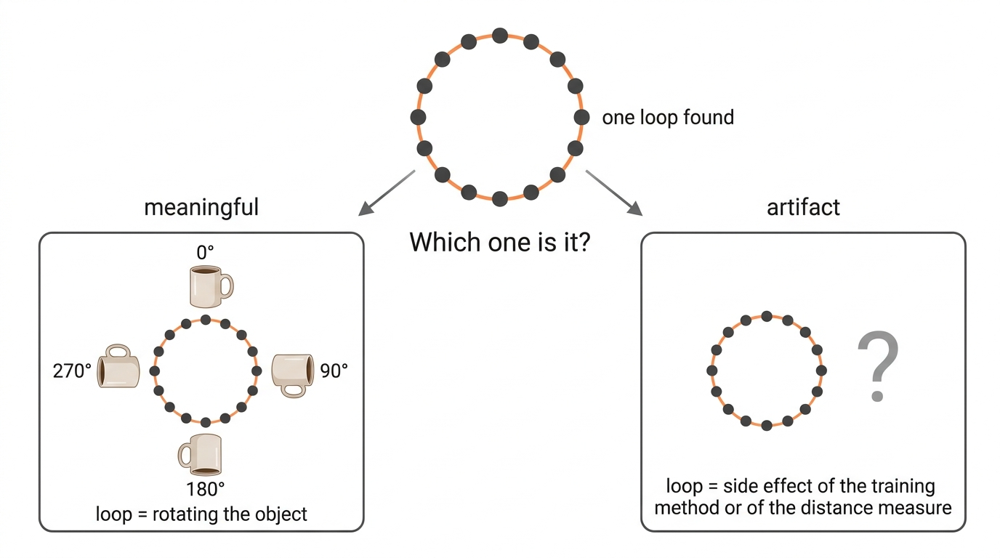

What Does the Topology of a Learned Representation Actually Mean?

In one sentence
When topological tools find a loop, a gap or a set of clusters inside a neural network's representation, what does that shape say about what the model has learned — and how do we tell a meaningful shape from an accident of measurement?
What is the problem?
Suppose you show a vision model hundreds of photos of the same coffee mug, each one rotated a few degrees further than the last, all the way round. You record the model's internal representation of every photo and run persistent homology on the resulting cloud of points (the method is explained in OP-04). The output says: "one long-lived loop."
That is a tidy result. But what does it mean? The tempting story is that the model has learned that rotation is circular — that turning the mug 360° brings you back to where you started. That might be true. It might also be that the loop comes from the way photos were lit, from the distance measure used, or from something about the training method that has nothing to do with mugs at all.
This is the situation for much of topological analysis of neural networks today. We can compute persistence diagrams for almost any layer of almost any model. We are much worse at reading them: saying which features of the diagram correspond to concepts the model uses, and which are noise.
This open problem is about meaning, not measurement: how the topological structure of a representation relates to the semantic structure the model has learned.
Why does it matter?
- Without meaning, topology is just another number. If we use topology to warn of failure (OP-04) or to guide training (OP-06), we need to know what we are warning about or asking for.
- It could be a new kind of interpretability. Most interpretability looks at single neurons or single directions. Topology looks at the global organisation of many inputs together — how concepts are arranged relative to each other.
- It helps tell good models from lucky ones. Two models with the same accuracy might organise their knowledge very differently. Shape could reveal which one has captured the real structure of the world.
- It guards against over-interpretation. Beautiful topological pictures are easy to produce and easy to over-read. A proper theory of meaning would tell us when to stop.
The key idea: the same shape can mean different things
The central difficulty fits in one picture.

For a loop to be meaningful, it should pass some tests that the barcode alone does not provide:
| Test | The question it asks |
|---|---|
| Walk the loop | If I follow the loop and look at the inputs along the way, do they change in a way a person can name — angle, colour, time of day? |
| Stability | Does the same loop appear with a different random seed, a different distance measure, or a different sample of inputs? |
| Ground truth | When I build data whose true shape I know in advance, does the representation recover that shape? |
| Use | If I disturb the representation so the loop breaks, does the model's behaviour change in a related way? |
There are encouraging precedents. Topological analysis of small patches of natural images found that they are organised along a surprisingly specific low-dimensional shape related to edges at different angles. In neuroscience, the activity of grid cells — neurons that help animals know where they are — has been shown to lie on a doughnut-shaped surface (a torus), matching the periodic pattern those cells respond to. In both cases, the topology was meaningful because it could be tied back to a known property of the world. That is the standard I would like to reach for neural network representations.
Why is it hard?
- Topology throws information away on purpose. It ignores exact distances and keeps only connectivity. That is why it is robust, but also why it cannot say which inputs make up a feature without extra work.
- Results depend on choices. Which layer, which distance, how many points, which construction — each can change the barcode. Separating the model's structure from the analyst's choices is not trivial.
- High-dimensional data is not naturally a neat shape. Real representations are noisy, uneven in density, and live in hundreds of dimensions. A clean loop or sphere is the exception, not the rule.
- Concepts are fuzzy. Even if we find a feature, naming what it means is a human judgement. Two people might read the same loop differently.
- Few benchmarks. There is little shared data with known "true" topology to test interpretations against.
What has been tried so far
- Topology of natural image data — studying the shape of small image patches directly and finding structure that matches how edges and orientations are arranged.
- Mapper graphs — a method that turns a point cloud into a simple network of overlapping clusters that people can look at and colour by labels, making shape easier to inspect by eye.
- Topology of network weights and filters — finding that the learned filters of image networks are organised in shapes similar to those found in natural image patches.
- Topology through the layers — showing that deep networks gradually simplify the shape of the data as it moves toward the output.
- Representation similarity measures — non-topological ways of comparing representations between layers or models, useful as a reference point.
- Critical studies — careful work asking when persistent homology actually helps on a task and when simpler features do just as well.
What is still missing is a reliable link back to meaning: a routine way to go from "the diagram has this feature" to "the model represents this concept", with checks that rule out artifacts.
How I would approach it
- Start where the right answer is known: build datasets with controlled structure — rotating objects (a loop), objects varying along two independent circular factors (a torus), several unrelated categories (separate pieces).
- Train ordinary networks on tasks that use these datasets, and check at every layer whether persistent homology recovers the known shape.
- For every feature found, walk it: look at the inputs along the loop or inside the cluster and check whether they share a nameable property.
- Repeat with different seeds, distance measures and samples, and keep only features that survive. Then move to real datasets, using the same checks as a filter against over-interpretation.
Questions still open
- When a learned representation has a long-lived loop or hole, how often does it correspond to a real, nameable property of the data?
- Which choices in the analysis (layer, distance, sampling) change the topology, and which leave it alone?
- Does a model whose representation matches the data's true shape generalize or resist attacks better? (see OP-02)
- When topology changes under distribution shift, can we say which concept broke? (see OP-04)
- Do quantum models, whose states live in a very different space, organise concepts with different shapes? (see OP-08)
This problem is the interpretive layer underneath the other topology questions: it decides whether a topological warning (OP-04) or a topological training target (OP-06) is actually about something the model knows.
Work on this together
If you work on topological data analysis, interpretability or computational neuroscience — or you have data whose true shape you know and would like to test a model against — I would love to hear from you. Disagreeing with how I framed the problem is just as welcome.
Reach out about OP-05Further reading
- Singh, Mémoli & Carlsson — Topological Methods for the Analysis of High Dimensional Data Sets and 3D Object Recognition (Eurographics SPBG 2007)
- Carlsson et al. — On the Local Behavior of Spaces of Natural Images (International Journal of Computer Vision, 2008)
- Carlsson — Topology and Data (Bulletin of the American Mathematical Society, 2009)
- Kornblith et al. — Similarity of Neural Network Representations Revisited (ICML 2019)
- Naitzat, Zhitnikov & Lim — Topology of Deep Neural Networks (JMLR 2020)
- Gardner et al. — Toroidal Topology of Population Activity in Grid Cells (Nature, 2022)
- Turkeš, Montúfar & Otter — On the Effectiveness of Persistent Homology (NeurIPS 2022)